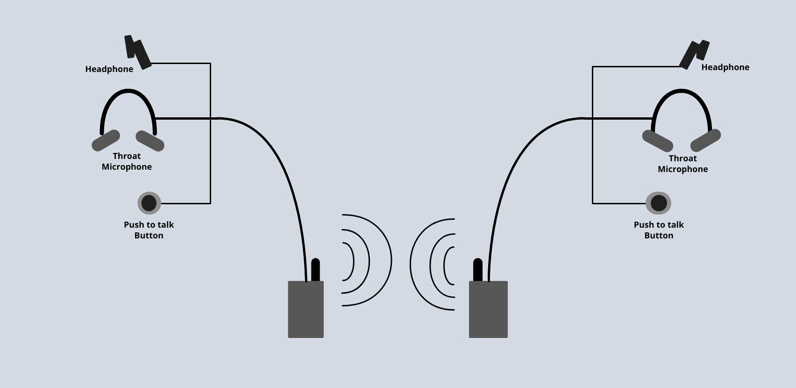
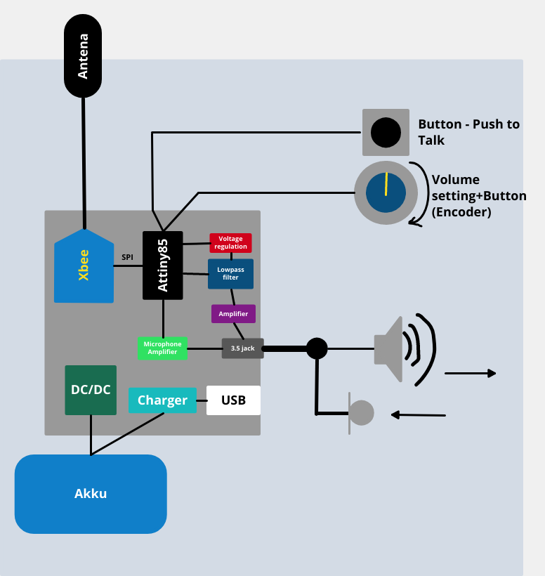

Fahrrad-Walkie-Talkie
Die Idee von diesem work-in-progress Hobby-Projekt ist ein Kommunikationsgerät fürs Fahrradfahren. Die Idee des Konstruktionsprinzips ist das Konstruktionsprinzip des Bodyguard-Kits für Sicherheitsdienste, mit einem Kopfhörer und Halsmikrofon. Für die erste Version ist eine Knopfaktivierung vorgesehen, aber später wird eine Sprach-Aktivierung hinzugefügt.
Die Hardware-Teil des Projekts wird für komplett manuele Anfertigung vorgesehen. Ausgewällter Mikrokontroller: Atmega328p. Als drahklose Kommuntikationsmodul dient ein nRF24L01-PA-LNA.
Eine struckturelle Schema des zukunftigen Geräts:
In dem Portfolio ist das work-in-progress Projekt für Demonstration des Programmteils für fertigen und geprüften Module dargestellt.
Für das Programm wurden die follgenden Programmodule in Form von Biblioteken für privaten Benutzung geschrieben:
- GPIO Bibliotek
- Timers (mit flexiblen Einstellmöglichkeiten, so wie ADC-Triggerung und PWM-Erzeugung)
- UART Interface
- Unterstutzung des inkrementalen Encoders
- ADC
- Ring Buffer
Zu Demonstrationszwecken sind die follgenden Dateien komplett oder teilweise dargestellt:
(Wählen Sie ein File aus, um dessen Inhalte sich anzuschauen)